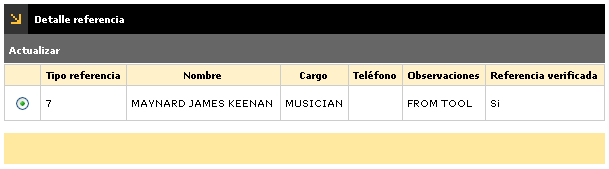

Solicitudes por etapa - Verificación referencias
Detalle referencia: A través de esta opción se lleva control de las referencias que el cliente tiene registradas en el sistema.
El formulario cuenta con la opción Actualizar, y adicionalmente con un botón que permite regresar al formualrio anterior.

Actualizar: Si el usuario invoca la opción Actualizar se despliega un formulario con los siguientes campos:

Tipo referencia |
Campo de salida que muestra el tipo de referencia configurado en la consulta del cliente al cual pertenece la solicitud. |
Teléfono |
Campo de salida que muestra el tipo teléfono de la referencia. |
Nombre |
Campo de salida que muestra el nombre de la referencia configurado en la consulta del cliente al cual pertenece la solicitud. |
Cargo |
Campo alfanumérico opcional de 60 caracteres, en el cual se indica el tipo de cargo. |
Observaciones |
Este campo permite ser actualizado y admite cualquier dato alfanumérico de máximo 2000 caracteres, acepta mayúsculas y minúsculas. |
Referencia verificada |
El campo Referencia verificada, debe proveer un combo con las opciones (Sí, No). |